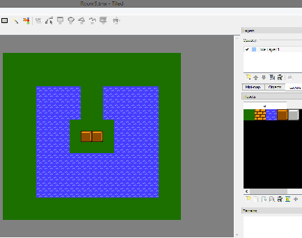
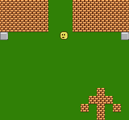

13、向上滚动
a
向上滚动要比向右滚动难的多。如果是向下滚动，可能会很容易，因为向上滚动就像是向左滚动一样。
只要你使用我的函数add_scroll_y() 和sub_scroll_y() 就可以解决这个问题，跳过0xf0-ff的Y值并没有太困难。我们还是需要将他们放到BG背景碰撞中，因为有一种可能是一半的显示在一个nametable中，一半是在另一个nametable中。且代码判断Y位置在0和$ef之间
由于向上滚动后，我们从最大值的位置开始滚动，滚动后变回0.
我不得不从后向前构造房间数组。
const unsigned char * const Rooms[]= {
Room5, Room4, Room3, Room2, Room1
};
通常，我用Tiled创建5个ROOM房间，并导出了5个以上的csv文件，转换为C数组，然后将它们导入到代码中。

经过几天的调试，终于正常了，我必须对制作像Kid Icarus，Metroid或Ice Climber等游戏的玩家给予一些应有的尊重，因为向上滚动并不容易。

https://github.com/nesdoug/16_Scroll_Up/blob/master/scroll_up.c
https://github.com/nesdoug/16_Scroll_Up